Measured, B is not narrow: at the same pixel size a line of B is 7% longer than the system face the PWA uses today (Segoe UI on Windows, Roboto on Android), and its overall width per x-height equals Segoe UI's. Two things do read narrower: B's round letters against its tall x-height (o/x 0.91, where Segoe UI is 0.98), and the opsz display cut that Apple and Android select by themselves for large titles. The interim wordmark face, Inter Tight, is the narrowest face measured.
avg/em: the mean advance of a–z per em. width/x: avg/em over the x-height, the proportion read as wide or narrow. o/x: the o's drawn width over the x-height. Lengths: one 209-character paragraph at 15 px set on one line in Chromium, and one title at 20 px and 34 px SemiBold. Fonts: the files themselves (measure/width.py, width.mjs). Every face is drawn from real weights and its own italic, with font-synthesis: none.
| Face | Where it is today | avg/em | x/em | width/x | o/x | SemiBold width/x | 15 px paragraph | chars per 770 px line | title 20 px SemiBold | title 34 px SemiBold | Vietnamese |
|---|---|---|---|---|---|---|---|---|---|---|---|
The PWA today: system-ui, -apple-system, "Segoe UI", Roboto, sans-serif | |||||||||||
| Segoe UI | PWA on Windows (Chromium's system-ui) | 0.493 | 0.500 | 0.987 | 0.984 | 1.025 | 1333 px | 121 | 243 px | 413 px | 104/104 |
| Segoe UI Variable Text | the Windows app | 0.493 | 0.500 | 0.987 | 0.984 | 1.025 | 1329 px | 121 | 243 px | 411 px | 104/104 |
| Roboto | PWA and app on Android | 0.499 | 0.528 | 0.945 | 0.910 | 0.957 | 1330 px | 121 | 243 px | 412 px | 104/104 |
| SF Pro | PWA and app on iPhone, iPad and Mac | Not shown and not measured: SF Pro cannot be rendered or opened on this machine, and no published source for its per-glyph widths was available. No other face stands in for it on this board. | |||||||||
| Slipgates Sans (B) | |||||||||||
| B as it ships | text cut, opsz 14: Windows and the web | 0.538 | 0.546 | 0.985 | 0.912 | 1.018 | 1424 px | 113 | 262 px | 445 px | 104/104 |
| B, opsz automatic | Apple and Android variable TTF as shipped | 0.522 · 0.491 | 0.536 · 0.516 | 0.974 · 0.951 | 0.917 · 0.928 | 1.013 · 1.004 | 1417 px | 114 | 256 px | 416 px | 104/104 |
| B, tracked | +1% text, +2% titles and SemiBold | 0.548 | 0.546 | 1.004 | 0.912 | 1.055 | 1455 px | 111 | 272 px | 463 px | 104/104 |
| B, text cut forced | opsz 14 at every size, every platform | 0.538 | 0.546 | 0.985 | 0.912 | 1.018 | 1424 px | 113 | 262 px | 445 px | 104/104 |
| Wider OFL alternatives, and references | |||||||||||
| IBM Plex Sans | alternative (RFN “Plex”) | 0.505 | 0.516 | 0.979 | 0.903 | 1.011 | 1352 px | 119 | 252 px | 429 px | 104/104 |
| Noto Sans | alternative (no RFN) | 0.530 | 0.536 | 0.989 | 0.925 | 1.022 | 1421 px | 113 | 266 px | 453 px | 104/104 |
| Atkinson Hyperlegible Next | measured; fails Vietnamese | 0.487 | 0.496 | 0.981 | 0.960 | 1.036 | 1332 px | 121 | 250 px | 425 px | 12/104 |
| Inter Tight | the interim wordmark and brand-board headings (#558) | 0.486 | 0.546 | 0.890 | 0.907 | 0.944 | 1279 px | 126 | 242 px | 412 px | 104/104 |
| Verdana | a wide reference | 0.562 | 0.545 | 1.030 | 0.923 | 1.162 (Bold) | – | – | – | – | 104/104 |
B, opsz automatic: the first value is opsz 20 (a 20 pt title), the second opsz 32 (a 34 pt Large Title). Its lengths are what Chromium draws with automatic optical sizing, as CoreText does on Apple. B, tracked: the advances include the added spacing. Vietnamese: the 104 precomposed letters (ă â đ ê ô ơ ư and U+1EA0–1EF9).
The real PWA in its demo mode, Chromium with an Android phone’s viewport (412 × 915, 2×). Before: the branch’s base, with Roboto drawn as Android’s system-ui and the previous mono. After: this branch, Slipgates Sans and Slipgates Mono. The demo’s turn is followed by two paragraphs added to the same element, so the app’s own CSS sets them.
Before · Roboto · Sessions, light
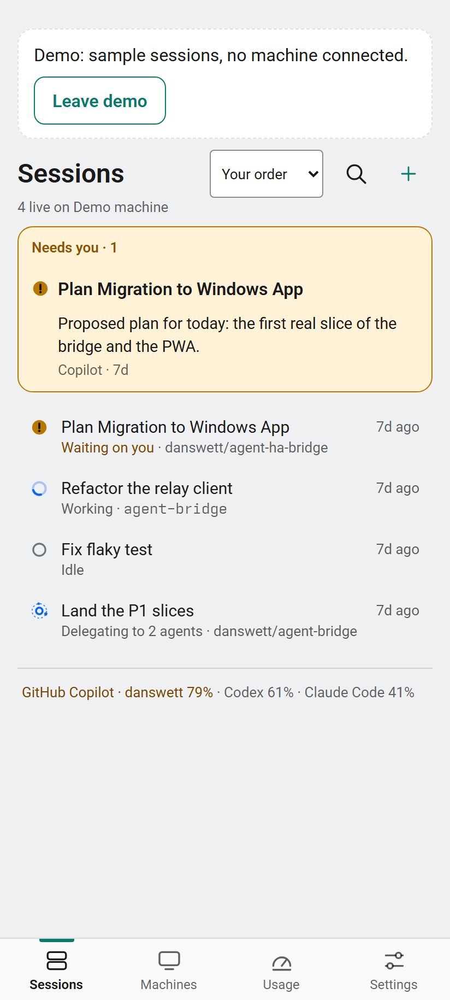
After · Slipgates Sans · Sessions, light
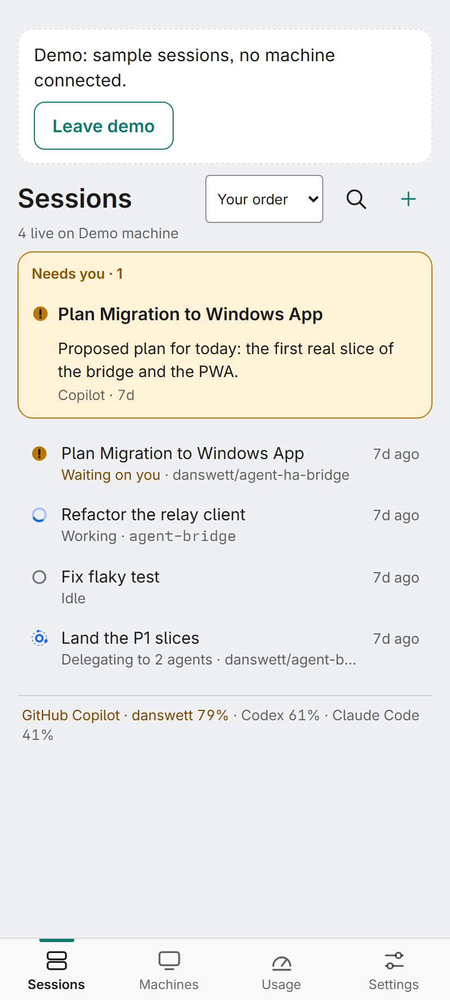
Before · Roboto · a session, dark
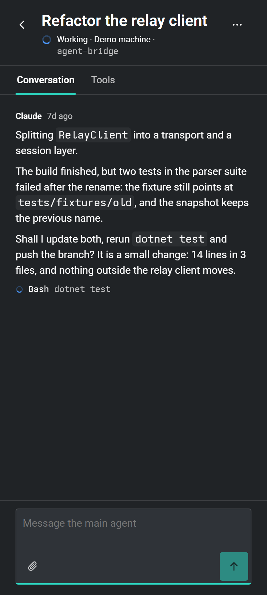
After · Slipgates Sans · a session, dark
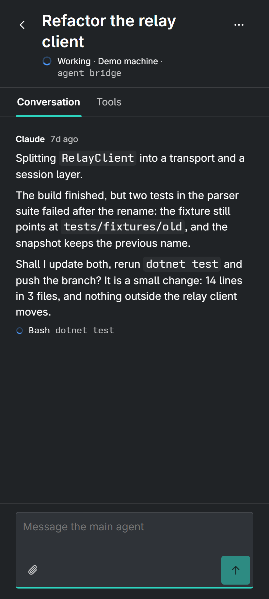
1440 × 900 at 100%, dark. Before: Segoe UI, which is what Chromium’s system-ui resolves to on Windows (Segoe UI Variable is the Windows app’s face; its widths match to within 0.5%). After: Slipgates Sans. Note the first row’s title now truncates in the 320 px list.
Before · Segoe UI · 100%, dark
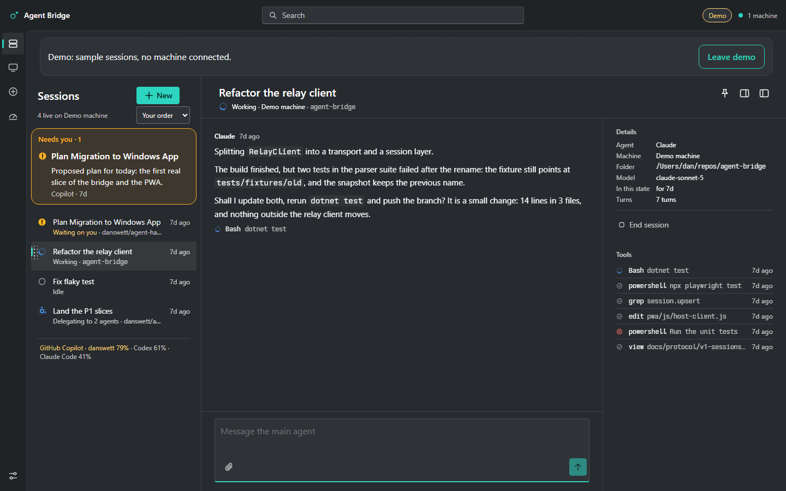
After · Slipgates Sans · 100%, dark
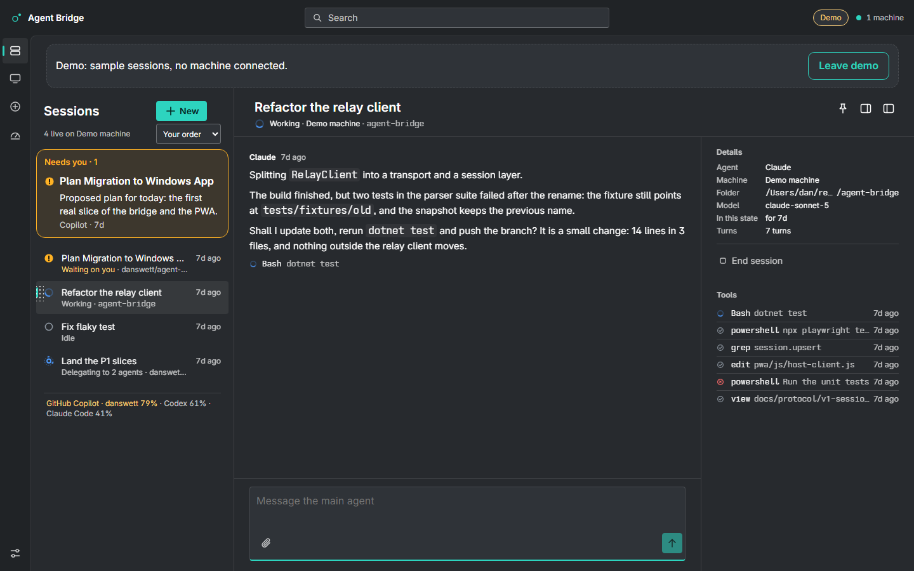
Before · Segoe UI · 150%, light
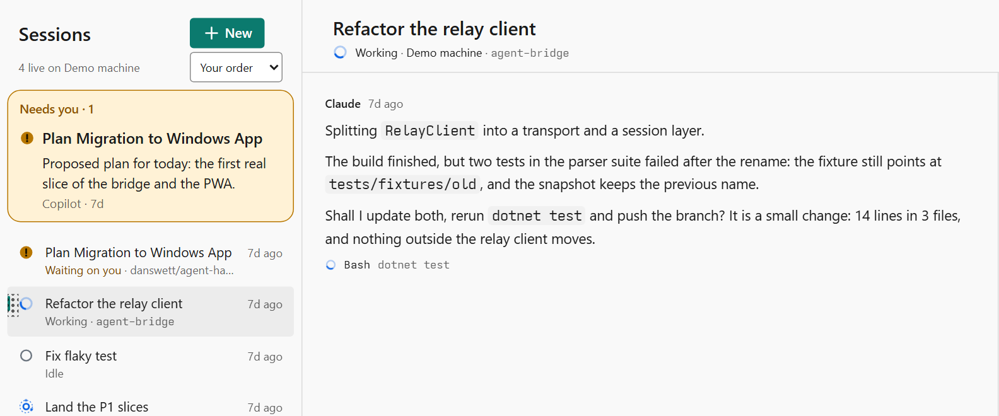
After · Slipgates Sans · 150%, light
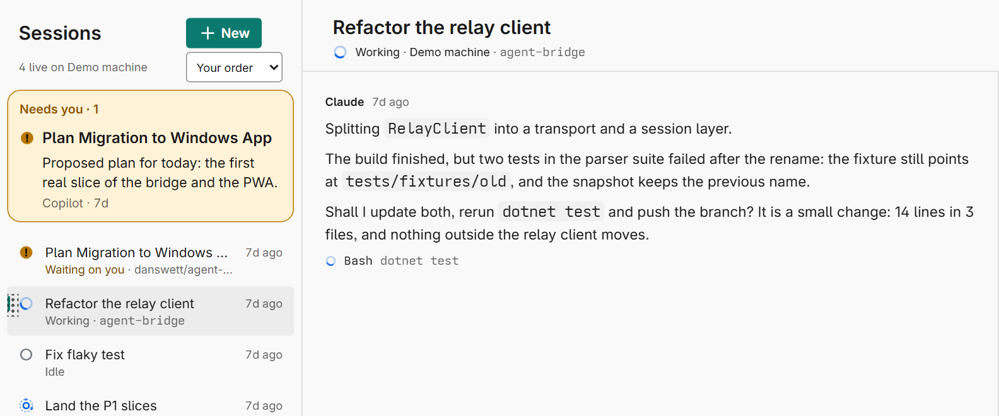
On Apple devices the PWA today draws SF Pro (system-ui and -apple-system). SF Pro is licensed only for Apple platforms and is not on this machine, so it is not rendered here and nothing stands in for it. After, Apple devices draw the same Slipgates Sans as in section 2, from the variable TTF, whose opsz CoreText sets from the point size (row “B, opsz automatic”).
The list and the conversation from the PWA, cropped. Each override replaces the text face only, matches inline mono to that face’s x-height as the app does, and sets font-synthesis: none.
B as it ships · text cut, opsz 14
B, tracked · +1% text, +2% titles and SemiBold
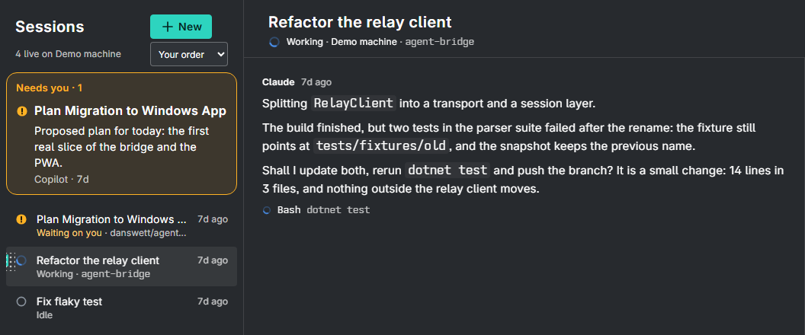
B, opsz automatic · as Apple and Android draw it today; “text cut forced” is the first panel
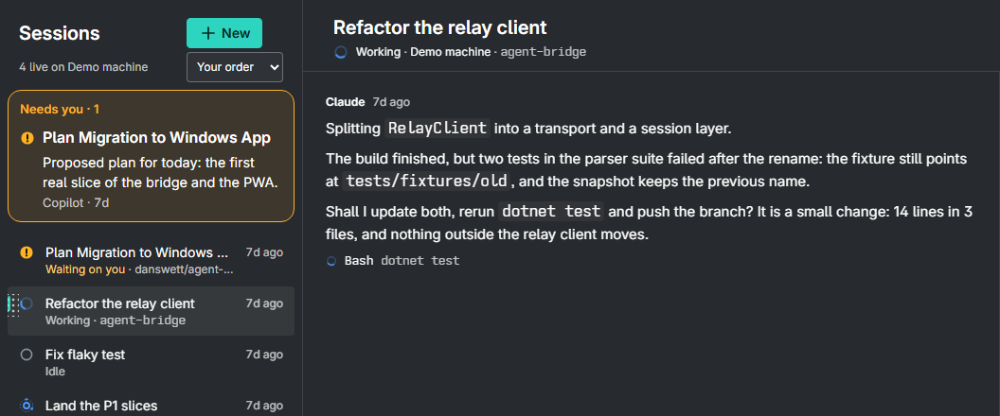
IBM Plex Sans · as released
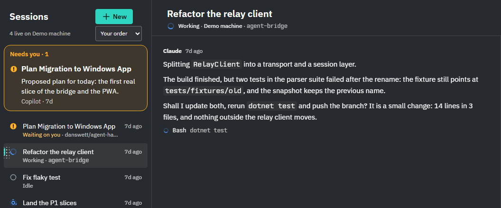
Noto Sans · as released
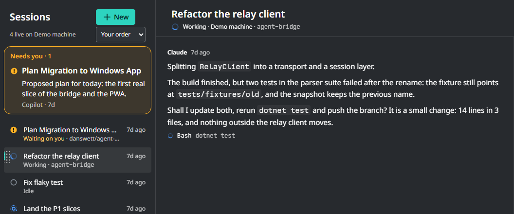
Segoe UI · the PWA today on Windows, the reference
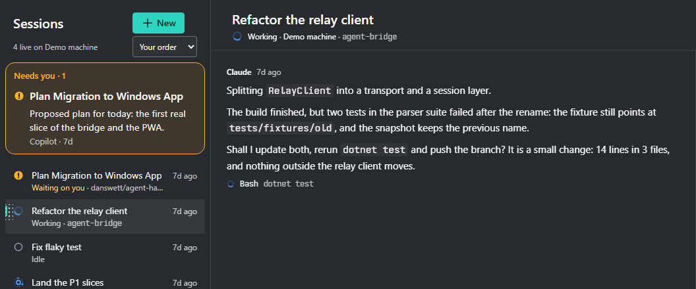
B as it ships. Lines run 7% longer than the system face (113 against 121 characters per 770 px line). The reading column was already widened 8% for this, so the measure holds. No synthesis: done. Work: none.
B, text cut forced. Windows and the web already draw opsz 14. On Apple and Android, the variable TTF lets the engine choose the display cut for large titles, which are then 6.5% narrower (416 px against 445 px at 34 px). Pinning opsz 14 in the Apple and Android outputs removes this, and the files get smaller. Line length is unchanged. No synthesis: unaffected. Work: small, a design-gen change and its tests.
B, tracked. Titles open up visibly. Body lines run 2% longer again (111 characters), so the reading column would need about +10% in total, not +8%. Tracking is spacing, not synthesis. Work: a letter-spacing token per role, emitted on four platforms (CSS letter-spacing, WinUI CharacterSpacing, Apple tracking, Android letterSpacing), with tests.
IBM Plex Sans. Its lines are shorter than B’s (119 characters) and its rounds are narrower (o/x 0.903). So it is not wider in the way the eye reads. There is no tailed-l alternate and there are no open-digit alternates, so both would be drawn on every master, and the Reserved Font Name “Plex” means the modified build is renamed. That rename is allowed, and Slipgates Sans is one. Vietnamese is complete. Work: it reopens all of #557 (build, hinting, four platform outputs, tests, boards), so days.
Noto Sans. Its line length is the same as B’s, and its rounds are slightly rounder (0.925). There is no tailed-l alternate (only a serifed I) and there are no open-digit alternates. It has no RFN and complete Vietnamese, but the variable files are 2 MB before subsetting. Work: the same as Plex.
Atkinson Hyperlegible Next has the roundest o (0.96), but only 12 of the 104 Vietnamese letters, so it fails a requirement already decided.
Recommendation: keep B. Force the text cut on Apple and Android, add +2% tracking to SemiBold titles only, and leave body text untracked, so the reading measure holds. Plex is not wider than B where it counts, Noto only by 1–2% (o/x 0.925 against 0.912), and either one reopens #557.
If the round letters still read narrow after that, the remaining fix is to draw B’s rounds about 4–6% wider in its sources (o c e d b p q g). That is a type-design change, not a setting.
The wordmark. The brand boards set it in Inter Tight, the narrowest face here (width/x 0.890, against B’s 0.985). That is the likeliest source of the “condensed” impression. With B kept, the wordmark moves to Slipgates Sans SemiBold, text cut, +2%, as planned once #557 merges. With Plex or Noto, it would move to that face’s SemiBold, with the same tracking.